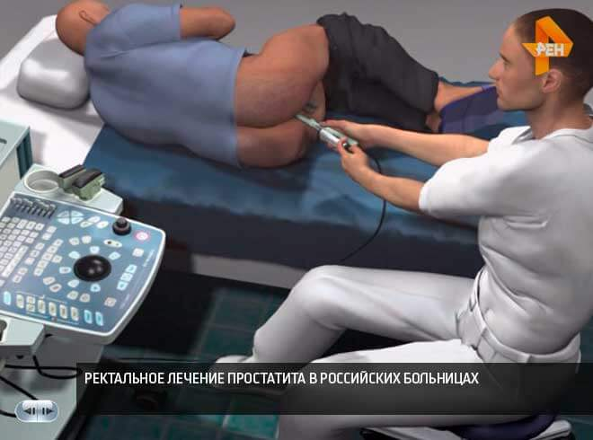
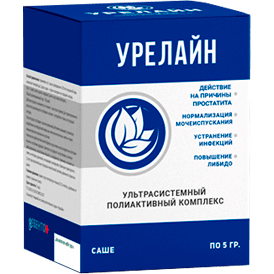
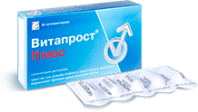
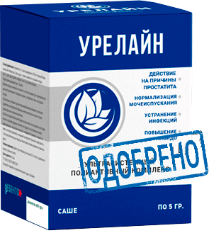

Секрет евреев: Еврейские мужчины лечат простатит за 2-3 недели! Один раз в жизни! Раз и навсегда! Узнаем как...
“В студии рен-тв Анатолий Вассерман, Вы смотрите программу “Открытым текстом”! Большинство из нaс уверены в том, что зарубежные дорогие препараты - самые надежные и эффективные. Но тaк ли это на самом деле?
Простатит является самым распространенным заболеваниям среди мужчин в возрасте старше 40 лет, при этом медики отмечают неприятную тенденцию к «омоложению» заболевания. К врачам все чаще обращаются мужчины с «проблемами» в возрасте 30, 25 и даже 20 лет.
В 2017 году кафедра урологии обнародовала пугающую статистику: более 55% мужчин в возрасте старше 40 лет сталкиваются с проблемами в области предстательной железы в той или иной форме. Определить наличие простатита довольно просто и без медицинского образования, большинство его симптомов специфичны:
-
Тянущие или режущие боли
- внизу живота, в мошонке,
- в промежности или половом члене
-
Расстройство мочеиспускания
- учащенное мочеиспускание, жжение в уретре
- чувство «не до конца опорожненного мочевого пузыря»,
- трудности с мочеиспусканием (слабая струя)
-
Расстройство половой функции
- снижения полового влечения
- ухудшение длительности и качества эрекции
-
Расстройство семяизвержения:
- преждевременная эякуляция или проблемы с ее достижением
- слабая эякуляция
- Повышенная утомляемость и раздражительность организма
Даже, несмотря на очевидное снижение качества жизни, многие мужчины годами живут с простатитом, не подозревая о необратимых последствиях, к которым могут привести, казалось бы, более-менее совместимые с жизнью неприятные ощущения.
Невылеченный до конца простатит всегда приводит к аденоме простаты ("мужская смерть")
Отчасти их понять можно, диагностика простаты у любого понимающего этот процесс мужчины вызывает нешуточную неприязнь и смущение. Тем более что в подавляющем большинстве случаев после получения на руки диагноза «простатит» походы к урологу становятся ежегодной каторгой. Врачи снимают самые острые симптомы с помощью «рекомендованных фармацевтами» препаратов, однако с каждым переохлаждением или несоблюдением режима простатит «всплывает снова».
Как простатит лечат у нас (и как его НЕ НУЖНО лечить)
Стандартная процедура лечения простатита в России.
- Мужчина обращается в клинику. Платную или бесплатную – не имеет значения, поскольку в итоге платить придется все равно.
- Врач проводит обследование, назначает кучу анализов. Некоторые даже не нужны, но на всякий случай, вдруг у человека найдется что-то еще, что можно вылечить. Плюс сами анализы стоят денег.
- После обследования врач ставит диагноз «простатит» и прописывает «рекомендуемые препараты». Препараты прописываются те, которые предназначены для снятия острых симптомов заболевания, но не лечения хронического простатита. И конечно же уролог рекомендует препараты компаний, чьи медицинские представители занесли ему больше всего денег. Препараты эти у всех на слуху.
-
В дополнении к “рекомендуемым” препаратам для снятия симптомов врачи всегда прописывают ректальный массаж простаты или же аппаратное лечение схожего действия. Это унизительная и очень неприятная процедура – массаж делается пальцем через анальное отверстие мужчины. В среднем массаж подразумевает 10-14 сеансов. За каждый сеанс, конечно, приходится платить.
В Европе данный массаж не делают уже более 20 лет, так как современные препараты позволяют вылечить простатит без него!

К своему сожалению, об этой проблеме я знаю на собственном опыте. Как известно (и я этого не скрываю), еще в молодости я принял обет целомудрия. Воздержание - дело малоприятное во всех отношениях. Так еще и снижение уровня тестостерона ( т.к.все возбуждение я свожу на нет) привел к воспалительному поражению предстательной железы.
Снижение уровня тестостерона — одна из главных характеристик старения мужчины или серьезного нарушения его обмена веществ. Во многом именно нехватка тестостерона приводит к ослаблению сексуального желания и снижению либидо, нарушению функции мочеиспускания, а также к набору лишнего веса и потере мышечной массы.
Аптечные работники всегда готовы Вам подсказать, какой препарат эффективнее, однако, никто не рассказывает к каким побочным эффектам приводят большинство препаратов для лечения простаты. Даже инструкции, заметьте, описывают лишь те побочные эффекты, которые могут возникнуть в процессе приема, упуская из вида огромный перечень тех, которые возникнут после длительного приема, когда активные синтетические соединения накопятся в вашем организме, например, мигрень, повышенное давление, нарушенный сердечный ритм, атрофия мышц. Я все это испытал на собственной шкуре. Спас меня старинный семейный рецепт, который евреи передают из поколения в поколение по мужской линии. Я порылся в отцовских записях и вспомнил, что еврейские мужчины всегда повышают тестостерон и лечат воспаления простаты с помощью настойки пиджеума - коры африканской сливы.”
Но где же ее найдешь, эту африканскую сливу в России? Я решил не сдаваться, и принялся за поиски пиджеума или готовых препаратов, имеющих его в составе.
Поиски привели меня в лабораторию Института Урологии им. Лопаткина Н.А. г. Москвы, где урологи совместно с производителями проводили исследования нового препарата под названием Урелайн.
Каково было мое удивление, когда после разговора с производителем я узнал, что Урелайн производится именно на основе нашего еврейского рецепта, и включает в себя значительную долю целительного пиджеума! Более того, этот современный препарат включает экстракт сассапарили и цинк, которые восстанавливают здоровую потенцию и продлевают половой акт.
Урелайн крайне заинтересовал меня, и я провел свое собственное независимое исследование, вне лаборатории. Результатом стало подробное сравнение с популярными аптечными препаратами от простатита. Для примера я взял наиболее популярное аптечное средство - Витапрост.

Урелайн

Витапрост
Цена Всего 978 ₽ за упаковку — в рамках федеральной программы "Мужское Здоровье" Около 1500 руб. за 10 суппозиторий. рекомендованный курс: 3 упаковки = 4500 руб. Форма выпуска: саше: по 5 гр. ректальные свечи: 10 шт. в упаковке Действие Полностью избавляет от простатита, в том числе хронического. Раз и навсегда. Всего за 1 курс приема. Снимает лишь острые симптомы простатита – боль и расстройства мочеиспускания. Дополнительные действия º Усиливает либидо
º Предупреждает раннее семяизвержение
º Улучшает потенцию
º Нормализует работу мочевого пузыря
º Улучшает состояние сосудов"Размягчение стула, усиление перистальтики кишечника Побочные эффекты Отсутствуют. Полностью натуральный состав. º При частом применении может вызвать злокачественные изменения в предстательной железе
º Снижает потенцию
º Вызывает проблемы с кишечником
º Подавляет иммунитет, способствует развитию аллергии
º Вызывает сильные боли в желудке"Принцип работы Комплексно воздействует на простату специально подобранным составом из 11 натуральных компонентов, обеспечивает противовоспалительное и укрепляющее действие. Выводит из простаты всю патогенную флору, улучшает структуру и функции простаты. Рекомендовано при хроническом, застойном и бактериальном простатите. Временно снимают болевые ощущения в простате, маскируя течение болезни. Однако после окончания действия препарата болезнь обостряется снова. Состав Натуральные растительные компоненты и витамины Сампрост, моногидрат стеарата кальция, кросповидон, триэтилцитрат, диоксид титана и др. химия Пока я проводил свое исследование, лабораторные тесты препарата успешно завершились. Исследования доказали безопастность и эффективность Урелайна, что совпадает и с моими наработками. Пока этот выпуск передачи готовился к эфиру, Урелайн официально поступил в продажу на территории России. На сегодняшний день приобрести Урелайн можно только на официальном сайте производителя.
Государство поддержало предложение Анатолия Александровича Вассермана по проведению акции "Мужское здоровье", в рамках которой каждый сможет приобрести Урелайн по цене 978 ₽ за упаковку.
А.А. Вассерман: "Это первый шаг к восстановлению здоровья российских мужчин, а так же к доступности и натуральности лечения простатита. И если он окажется успешным, в реформу здравоохранения будут внесены поправки, согласно которым препарат будут назначать в муниципальных учреждениях.
Подробнее о препарате Урелайн, его составе и способе действия можно узнать на официальном сайте производителя. До 20.05.2019 (включительно), там же можно будет получить скидку на приобретение препарата.
 ПОЛУЧИТЬ Урелайн ПО ЦЕНЕ 978 ₽
194 комментария за сегодняMihaTankist:Спасибо за интересную статью! В России все коррумпировано на высшем уровне, хорошо, что интернет пока еще доступен. Заказал Урелайн. Буду лечиться.два часа назадНаталья Кравченко:Вот же молодцы евреи, какой народ! Такое средство придумали, и главное же натуральное. Мужу сразу же заказала как увидела выпуск передачи.два часа назадСергей Кокорев:Полностью подтверждаю! Урелайн – чудо-препарат. Купил его в Черногории, когда отдыхать ездил прошлым летом. До этого мучился от хронического простатита лет 10 точно. Пробовал лечить, но как написано выше, лечение давало лишь временный эффект. С использованием Урелайн простатит прошел полностью. Больше чем за полгода ни разу не давал о себе знать. Раньше о таком мог только мечтать. Рекомендую Урелайн всем мужикам. Он поможет!два часа назад Андрей ШерстневЗаказал. Действительно Урелайн обошлшелся всего 978 ₽))) Приятно удивлен. Спасибо!два часа назадKolesnikov_I:Неужели это все правда? Я был у уролога, он ни слова ни сказал про Урелайн, выписал Галотестин, который стоит 5800 за пачку! И при этом у него еще куча побочек. У меня просто нет таких денег, поэтому буду пробовать наш препарат.два часа назад
Андрей ШерстневЗаказал. Действительно Урелайн обошлшелся всего 978 ₽))) Приятно удивлен. Спасибо!два часа назадKolesnikov_I:Неужели это все правда? Я был у уролога, он ни слова ни сказал про Урелайн, выписал Галотестин, который стоит 5800 за пачку! И при этом у него еще куча побочек. У меня просто нет таких денег, поэтому буду пробовать наш препарат.два часа назад Игорь ХарченкоХронический простатит у меня с 28 лет. Сейчас мне 41. За это время лечил его два раза, когда были сильные обострения. В последний раз врачи еле спасли. Сказали, еще чуть-чуть и простатит перешел бы в рак простаты. Поэтому всем советую, у кого имеется простатит, избавляться от него как можно раньше. Это очень опасная болячка.два часа назадЕгор Вольнов:Анатолий, спасибо за инфу вам и вашей передаче! Купил. И, правда, получилось всего 978 ₽. Ни разу таких акций не было. Спасибо производителям!два часа назадvasilykotof:Отличное средство!два часа назадПолечка:Я мужа младше на 17 лет. У нас уже трое детей, он уже в возрасте, это дает о себе знать. Но я не готова ставить крест на себе, как на женщине надеюсь что поможетдва часа назадВиталий:Спасибо за ссылку! Давно искал производителя и препарат. В 43 начались проблемы с походами в туалет, сосед на даче рассказывал про наше средство, но где купить, не знал. Надеюсь, что сейчас все получится!два часа назад
Игорь ХарченкоХронический простатит у меня с 28 лет. Сейчас мне 41. За это время лечил его два раза, когда были сильные обострения. В последний раз врачи еле спасли. Сказали, еще чуть-чуть и простатит перешел бы в рак простаты. Поэтому всем советую, у кого имеется простатит, избавляться от него как можно раньше. Это очень опасная болячка.два часа назадЕгор Вольнов:Анатолий, спасибо за инфу вам и вашей передаче! Купил. И, правда, получилось всего 978 ₽. Ни разу таких акций не было. Спасибо производителям!два часа назадvasilykotof:Отличное средство!два часа назадПолечка:Я мужа младше на 17 лет. У нас уже трое детей, он уже в возрасте, это дает о себе знать. Но я не готова ставить крест на себе, как на женщине надеюсь что поможетдва часа назадВиталий:Спасибо за ссылку! Давно искал производителя и препарат. В 43 начались проблемы с походами в туалет, сосед на даче рассказывал про наше средство, но где купить, не знал. Надеюсь, что сейчас все получится!два часа назад Николай В.:При первых звоночках начал прием, стало лучше, чем было. Дома сейчас всегда держу внушительный запас. Средство работает, но никогда не знаешь, что ждать от правительства. Вдруг совсем поставки прикроют. Поэтому слежу за акциями и всегда беру. Держу всегда в ванне на полочке. Спасибо.два часа назадАрсений:Спасибо!час назадАрина Николаевна:Надо мужу такой заказать, спасибо евреям(не расизм) :)52 минут назадАндрей Мальков:суть верная, да, передача - бомба, у меня аж челюсть упала...вот он, секрет еврейского здоровья...Закажу Урелайн , пока есть в наличии!48 минут назадВиталий:ладно-ладно! убедили)) изыщу чуть бабосиков на здоровье) Заказ оформил. И правда ведь 978 ₽ цена, давно уже таких ценников не видел в стране. Толя спасибо!48 минут назадАнатолий Вассерман:Дорогие читатели и телезрители! Я очень рад, что Вас заинтересовала данная тема, потому что только объединившись мы сможем победить эту страшную болезнь. Спасибо за теплые отзывы и Ваше участие. Вместе мы, я уверен, поспособствуем тому, что Урелайн наконец-то начнут поставлять в больницы и аптеки. Спасибо всем неравнодушным!48 минут назадАнтонов:Мне пока 37, но стал замечать, что утром не всегда стоит. Чо-т запаниковал. Щас почитал вас, а вдруг правда это возрастное уже? Этот препарат в качестве профилактики можно?48 минут назадАнатолий Вассерман:Антонов, не просто можно, а нужно! Урелайн , для профилактики лишним не будет! И простату укрепит, и на потенцию благотворно повлияет - продлит половой акт, укрепит эрекцию. Еще спасибо скажете, когда почувствуете эффект.48 минут назад
Николай В.:При первых звоночках начал прием, стало лучше, чем было. Дома сейчас всегда держу внушительный запас. Средство работает, но никогда не знаешь, что ждать от правительства. Вдруг совсем поставки прикроют. Поэтому слежу за акциями и всегда беру. Держу всегда в ванне на полочке. Спасибо.два часа назадАрсений:Спасибо!час назадАрина Николаевна:Надо мужу такой заказать, спасибо евреям(не расизм) :)52 минут назадАндрей Мальков:суть верная, да, передача - бомба, у меня аж челюсть упала...вот он, секрет еврейского здоровья...Закажу Урелайн , пока есть в наличии!48 минут назадВиталий:ладно-ладно! убедили)) изыщу чуть бабосиков на здоровье) Заказ оформил. И правда ведь 978 ₽ цена, давно уже таких ценников не видел в стране. Толя спасибо!48 минут назадАнатолий Вассерман:Дорогие читатели и телезрители! Я очень рад, что Вас заинтересовала данная тема, потому что только объединившись мы сможем победить эту страшную болезнь. Спасибо за теплые отзывы и Ваше участие. Вместе мы, я уверен, поспособствуем тому, что Урелайн наконец-то начнут поставлять в больницы и аптеки. Спасибо всем неравнодушным!48 минут назадАнтонов:Мне пока 37, но стал замечать, что утром не всегда стоит. Чо-т запаниковал. Щас почитал вас, а вдруг правда это возрастное уже? Этот препарат в качестве профилактики можно?48 минут назадАнатолий Вассерман:Антонов, не просто можно, а нужно! Урелайн , для профилактики лишним не будет! И простату укрепит, и на потенцию благотворно повлияет - продлит половой акт, укрепит эрекцию. Еще спасибо скажете, когда почувствуете эффект.48 минут назадОСТАЛОСЬ 107 УПАКОВОК ПО АКЦИИ ЗА 978 ₽

Анатолий Вассерман , советский, украинский и российский журналист, публицист, телеведущий, политический консультант, участник и многократный победитель интеллектуальных телеигр.
Евреи из поколения в поколение передают знания о методах повышения тестостерона у мужчин. Не зря о плодовитости еврейского народа давно ходят легенды. Что же делали и продолжают делать евреи для усиления уровня тестостерона в крови и поддержания эректильной функции на исключительно высоком уровне?
Метод неинвазивного лечения простатита при помощи натуральный добавки на основе коры африканской сливы (пиджеума) был известен еврейским мужчинам еще столетия назад.
Начиная с 1996 года — добавки на основе пиджеума становятся медицинским стандартом и рекомендуются к врачебной практике в Израиле и, позднее, во всех странах ЕС и в США.
Единственный российский аналог, чья эффективность и безопасность признана израильскими специалистами, продается в России под брендом "Урелайн" .
за 978 ₽